糖尿病：穩定血糖，避免忽高忽低
看懂目標、每天做到、知道何時求助
🎯 看懂自己的目標
- A1C 反映近約 2–3 個月平均血糖。
- 使用連續血糖監測者，多數成人常以 TIR 70–180 mg/dL 超過 70% 為參考。
- 請以醫療團隊設定的個人目標為準。
🥗 每天三件事
- 規律用藥，不自行停藥或加減量。
- 餐盤先蔬菜、再蛋白質，主食定量；少喝含糖飲料。
- 規律活動並記錄血糖，回診時一起討論。
🚨 低血糖與警訊
- 血糖低於 70 mg/dL 且人清醒：補充 15 克快速糖，15 分鐘後再測。
- 仍偏低可再處理一次並求助。
- 意識不清、抽搐或無法吞嚥：不要餵食，立即求救。
📉 第 2 型糖尿病的 β 細胞功能變化示意
病友常因為「要吃更多藥」或「要打針」而感到自責。病程與治療需求會隨時間改變，不代表您做錯了什麼；請和醫療團隊一起調整適合的治療。
👆 點擊圖表中的圓點，查看對應病程的去污名化解說與建議 👆
診斷時的群體趨勢示意
第 2 型糖尿病通常在診斷前已經過一段時間的代謝變化。圖中數值只是教學模型，不能代表您個人剩餘的胰島功能。
🚦 個人化控糖紅綠燈 & eAG 換算
⬅️ 拖動滑桿調整糖化血色素 (A1C) 值 ➡️
🟢 一般成人常用參考目標 (A1C < 7.0%)
許多非孕期成人會以 A1C < 7.0% 為參考，但個人目標需依年齡、低血糖風險、共病與生活功能調整。
📖 實際目標請由主治醫師依健康狀況、生活功能與照護目標共同設定，不要自行調藥。
📋 血糖與糖化血色素 (HbA1c) 臨床診斷標準
依據中華民國糖尿病學會臨床照護指引：
| 分類 | 空腹血糖 (Fasting Glucose) | 糖化血色素 (HbA1c) | 臨床狀態與處置建議 |
|---|---|---|---|
| 🟢 正常血糖 | < 100 mg/dL | < 5.7% | 良好狀態。維持均衡飲食、規律運動，每年定期篩檢一次。 |
| 🟡 糖尿病前期 | 100 - 125 mg/dL | 5.7% - 6.4% | 血糖警報！胰島 β 細胞已開始疲勞。此階段為「逆轉黃金期」，藉由飲食控制與每週 150 分鐘有氧運動，極大機會可恢復正常。 |
| 🔴 糖尿病 | ≥ 126 mg/dL | ≥ 6.5% | 達糖尿病診斷界值。若沒有明顯高血糖症狀，通常需要再次檢驗或同次有另一項異常結果，由醫師確認診斷。 |
目標範圍內時間 (TIR)：血糖維持在 70–180 mg/dL 的時間佔比。下列情境只顯示可能的影響方向，不會、也不能預測您的實際 TIR：
請選擇情境。真實 TIR 必須來自 CGM 資料，並同時查看低血糖時間。
👣 全身血管保衛戰：併發症地圖
👁️ 視網膜病變篩檢：看見眼底變化
糖尿病視網膜病變早期可能沒有明顯症狀，請依醫療團隊安排定期接受眼底檢查。
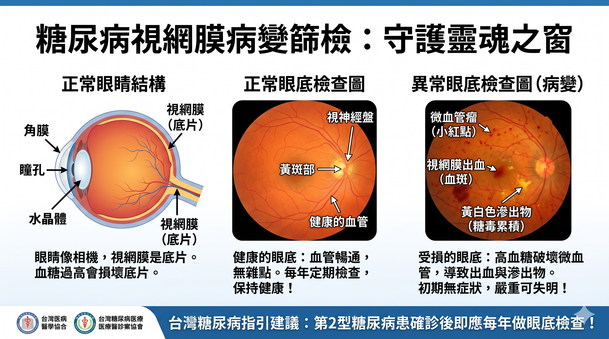
點選圖片可全螢幕放大。圖中呈現正常眼底與微血管瘤、出血及滲出物等病變的差異；實際診斷與追蹤頻率由眼科及糖尿病照護團隊決定。
圖片含原始來源標誌，目前僅供診間內部衛教；公開上網、印製或轉載前，請先確認授權範圍。
🧍 全身併發症互動地圖
點選人體標記或下方說明卡，依序認識腦、眼、心臟、腎臟與足部的照護重點。
🧠 腦血管病變 (腦中風 | 缺血性中風風險增加 1.5 - 2.5 倍)
📊 發生比例：盛行率約 7.6% (糖尿病患者中風風險是非糖尿病患的 1.5 - 2.5 倍)
📖 實證文獻：ADA Care Guidelines 2026【Level 1a】
👁️ 眼底視網膜病變 (全球盛行率 22.3% | 罹病20年以上達 60% - 80%)
📊 發生比例：全球約 22.3% (罹病超過 20 年盛行率達 60% - 80%，增殖性 PDR 約 6%)
📖 實證文獻：Ophthalmology 2023; 130【Level 1a】
🫀 心血管疾病 (盛行率 12.7% - 21.9% | 風險高 2 - 4 倍)
📊 發生比例：冠狀動脈疾病約 12.7% - 21.9% (心肌梗塞風險高出 2 - 4 倍)
📖 實證文獻：Lancet 2018; 391【Level 1a】
🩺 糖尿病腎臟病變 (盛行率 30% - 40% | 佔洗腎 45% - 47%)
📊 發生比例：最終發展為 DKD 約 30% - 40% (台灣洗腎患者中有 45% - 47% 由糖尿病引起)
📖 實證文獻：KDIGO Clinical Practice Guideline 2024【Level 1a】
👣 周邊神經與足部病變 (神經病變約 50% | 足潰瘍 19% - 34%)
📊 發生比例：神經病變約 50%、足潰瘍累積率 19% - 34% (5年死亡率達 30%)
📖 實證文獻：ADA Diabetes Care 2025【Level 1a】 / Lancet 2020; 396【Level 2a】
🧫 KDIGO 糖尿病慢性腎臟病 (CKD) 風險與監測矩陣
🔍 腎功能快速評估
| eGFR / UACR | A1 正常至輕微 < 30 mg/g |
A2 中度增加 30–299 mg/g |
A3 重度增加 ≥ 300 mg/g |
|
|---|---|---|---|---|
| G1 | ≥90 |
低風險 1次/年 |
中度 1次/年 |
高風險 2次/年 |
| G2 | 60-89 |
低風險 1次/年 |
中度 1次/年 |
高風險 2次/年 |
| G3a | 45-59 |
中度 1次/年 |
高風險 2次/年 |
極高 3次/年 |
| G3b | 30-44 |
高風險 2次/年 |
極高 3次/年 |
極高 ≥3次/年 |
| G4 | 15-29 |
極高 3次/年 |
極高 ≥3次/年 |
極高 ≥4次/年 |
| G5 | <15 |
極高 ≥4次/年 |
極高 ≥4次/年 |
極高 ≥4次/年 |
🥗 糖尿病六大類飲食與醣類計算互動指南
🥦 認識每日六大類食物分類
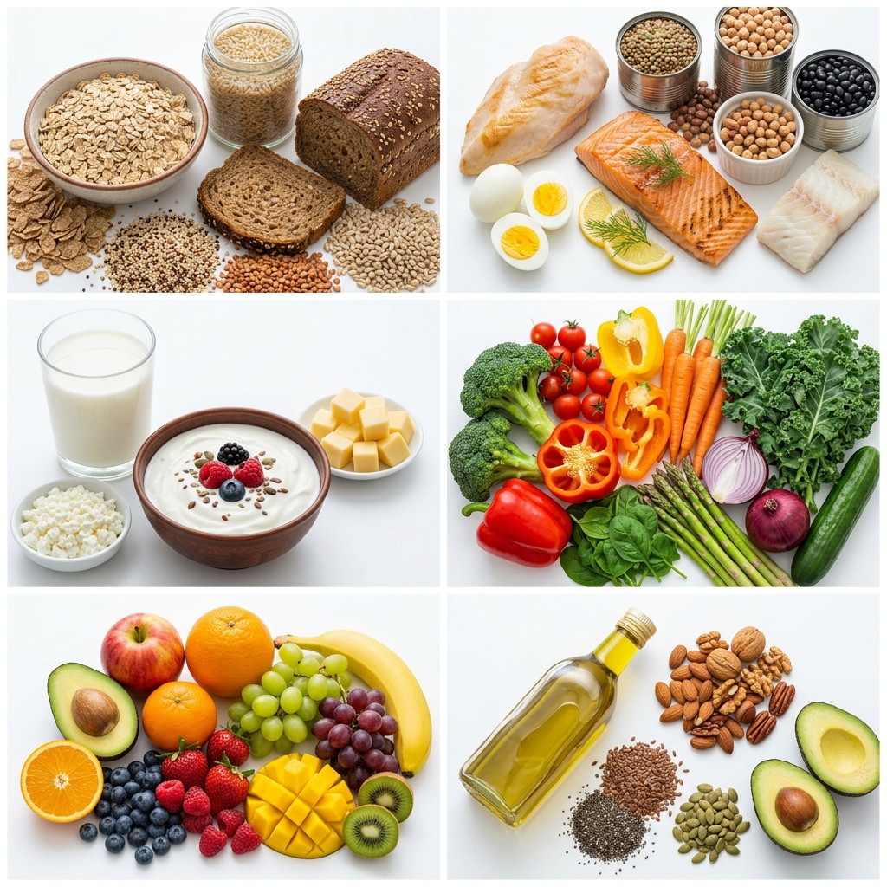
均衡攝取六大類食物有助獲得所需營養。全穀雜糧、水果與乳品含有醣類，需留意份量；適合份量會依藥物、腎功能、活動量與個人目標而不同。
🍽️ 實用的 2:1:1 盤子飲食法
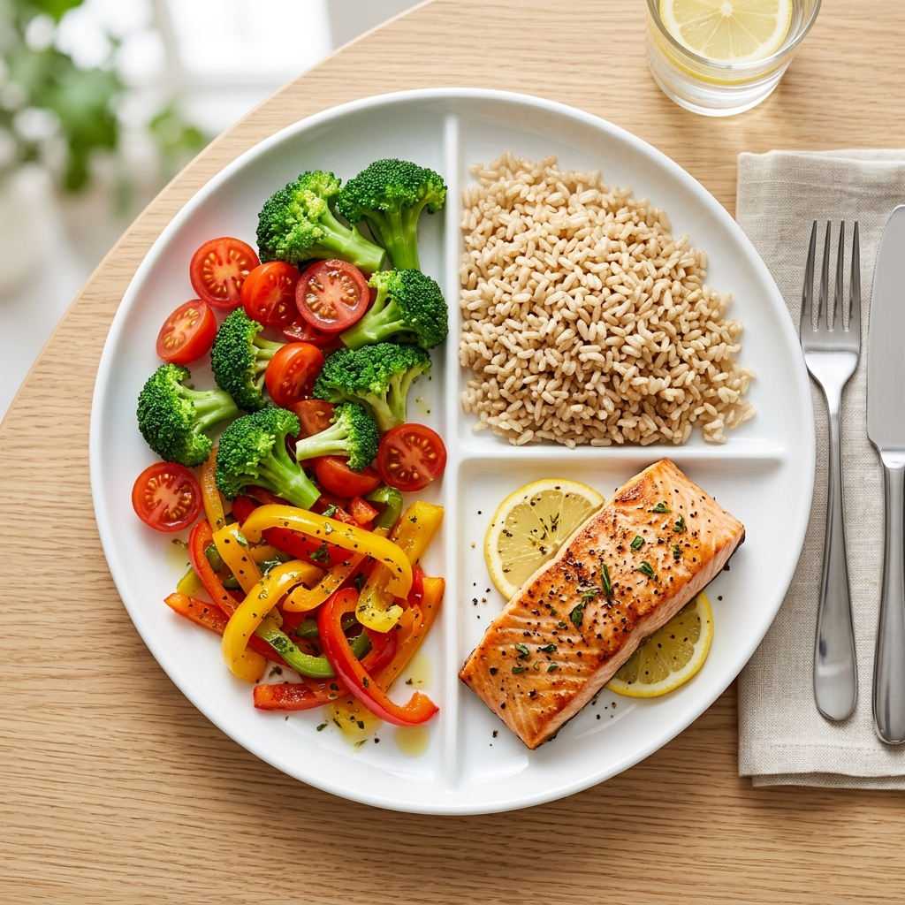
🥗 2:1:1 比例速記口訣：
• 1/2 蔬菜 (2)：富含膳食纖維的深色及彩虹蔬菜，延緩糖分吸收。
• 1/4 蛋白質 (1)：如烤魚、豆腐、雞肉，維持肌肉量、增加飽足感。
• 1/4 澱粉 (1)：首選高纖全穀雜糧類（如糙米、地瓜），嚴控精緻白米與麵食。
🍎 認識六大類食物與升糖警戒
點擊下方卡片可查看該類別的「1份食物代換表」與防糖叮嚀：
全穀雜糧類
主要提供碳水化合物與熱量。是人體能量來源，但會直接影響血糖，每餐需秤量攝取。
水果類
富含維生素C與果糖。果糖會迅速被腸胃吸收轉化為血糖，每日上限 2 份，切勿打成汁。
乳品類
提供豐富鈣質與蛋白質。因含有乳糖，亦屬於會升糖食物，建議每天規律 1 份即可。
蔬菜類
極低卡，富含膳食纖見。能包覆糖分、延緩腸道吸收，是平穩餐後血糖的防護罩！
豆魚蛋肉類
優質蛋白質與脂肪來源。不直接升血糖，但有助於增加餐後飽足感，維持肌肉機能。
油脂與堅果類
提供必需脂肪酸與能量。不影響血糖，但高熱量，過度攝取會增加體重與胰島素阻抗。
📊 每日熱量與食物份量教學估算
輸入身高與日常活動度，取得臨床指引建議飲食計畫：
📈 教學估算結果
🌾 建議每日食物份數分配：
🍱 每日 2:1:1 照護配餐示範
請完成上方計算以自動為您生成最適合的每日餐單：
🌅 早餐示範
請先完成上方飲食計畫試算。
☀️ 午餐示範 (2:1:1餐盤)
請先完成上方飲食計畫試算。
🌙 晚餐示範
請先完成上方飲食計畫試算。
🍽️ 今日互動餐盤組合器與醣類試算
加減您這一餐的食物，並計算是否符合碳水控制計畫，提供即時回饋：
🌾 主食選擇 (會升糖) 1份 = 1/4碗飯 = 1/2碗麵
🍓 水果類 (含醣) 1份大約含 15g 醣；各種水果的份量不同
🥛 乳品類 (會升糖) 1份 = 240ml牛奶/1杯優格
🍳 蔬菜、蛋白質與油脂 (不直接升糖)
餐點營養試算回饋
請點選這一餐的食物，系統會估算醣份量與熱量。個人餐次目標須依用藥、活動量、腎功能及營養需求，由醫師或營養師共同設定。
高血壓：量得準，才控得穩
記住 722、正確量測、規律治療
7️⃣2️⃣2️⃣ 居家量血壓
- 7：連續 7 天。
- 2：早晚各量一次。
- 2：每次量 2 遍，間隔 1 分鐘並記錄。
🪑 量測前先做好
- 先排尿、安靜坐 5 分鐘。
- 背靠椅背、雙腳平放、不說話。
- 壓脈帶貼合上臂，手臂與心臟同高。
- 依處方服藥，別因單次數值自行停藥。
🚨 立即就醫警訊
- 胸痛、呼吸困難、突然劇烈頭痛。
- 臉歪、手腳無力、說話不清或視力突變。
- 血壓異常合併上述症狀，立即求救。
💓 高血壓控制目標與 722 法則
🎯 控制參考目標：< 130/80 mmHg
根據《2022 台灣高血壓治療指引》，許多能安全耐受治療的成人可朝 130/80 mmHg 以下努力；是否適合仍須考量年齡、衰弱、姿勢性低血壓與共病。
🏠 居家血壓測量黃金公式：「722 法則」
• 7：連續量 7 天（健檢前或調整藥物時）。
• 2：天天量 2 次（早上起床後1小時內、晚上睡前1小時內）。
• 2：每次量 2 遍（每次間隔1分鐘，取兩次平均值以防誤差）。
📋 血壓分類與控制目標 (2022 台灣高血壓指引)
測量均以安靜狀態下的診間或居家測量平均值為準：
| 血壓分類 | 收縮壓 (Systolic / 高壓) | 舒張壓 (Diastolic / 低壓) | 臨床處置與照護建議 | |
|---|---|---|---|---|
| 🟢 正常血壓 | < 120 mmHg | 與 | < 80 mmHg | 良好狀態。維持健康低鈉飲食與運動，每年定期測量一次。 |
| 🟡 血壓偏高 | 120 - 129 mmHg | 與 | < 80 mmHg | 建議調整生活型態（減少鈉鹽、維持適當體重、規律活動），並依醫療人員建議追蹤。 |
| 🔴 高血壓 | ≥ 130 mmHg | 或 | ≥ 80 mmHg | 符合此指引的高血壓門檻。單次量測不能確診，請以多次正確量測及醫師評估確認，並設定個人化目標。 |
⚠️ 血壓升高與長期心血管風險
族群研究顯示，血壓長期越高，心血管事件與死亡風險通常越高。下圖只呈現風險上升方向，不是個人預測。
* 註：這是族群研究呈現的長期風險趨勢，不是個人風險計算，也不能只靠單次血壓預測事件；請以多日居家平均值及醫師整體評估為準。
📊 高血壓引發之慢性併發症與風險數據
高血壓是隱形的殺手，長期忽視會導致全身血管與器官病變：
🧠 腦血管中風 (Stroke)
長期血壓偏高會增加缺血性與出血性中風風險；個人目標由醫師依耐受度與共病設定。
🫀 心肌梗塞與冠心病
長期高血壓會增加冠心病、心肌梗塞與心臟衰竭風險，需同時管理血脂、血糖與吸菸。
💥 主動脈剝離 (Dissection)
高血壓是主動脈剝離的重要危險因子；突然劇烈胸背痛、昏厥或神經症狀應立即求救。
🩺 末期腎衰竭 (ESRD)
高血壓可能損傷腎臟，也可能因腎臟病而更難控制；需定期追蹤腎功能與尿蛋白。
高血脂：壞膽固醇沒有感覺，也要控制
先看整體風險，再訂 LDL-C 目標
🧪 先確認風險
- 看 LDL-C、三酸甘油酯與 HDL-C。
- 一起評估年齡、抽菸、血壓、血糖與家族史。
- 請把自己的 LDL-C 目標寫在檢驗單上。
🥜 日常護血管
- 多蔬菜、全穀、豆魚蛋與原味堅果。
- 少油炸、肥肉、加工肉及反式脂肪。
- 規律活動、戒菸、控制體重與血糖。
- 降脂藥須規律服用，不自行停藥。
🚨 心腦血管警訊
- 胸悶胸痛、冒冷汗、喘或疼痛延伸到手臂與下巴。
- 臉歪、手無力、說話不清。
- 出現任何一項，立即求救，不要自行開車。
🥑 壞膽固醇 (LDL-C) 控制目標
高血脂的關鍵在於低密度膽固醇 (LDL-C，又稱壞膽固醇)。它會卡在血管壁上，形成粥狀硬化斑塊，就像老舊水管被油脂塞住一樣。
第一步：確認風險
第二步：加入共病
第三步：寫下個人目標
🎚️ LDL-C 長期風險趨勢示意
調整下方 LDL-C 數值，以圖像理解「長期暴露越高，心血管風險通常越需要重視」。彩色提示帶不是血管攝影，也不能推算斑塊大小、血流速度或個人發作機率。
🟡 請對照您的個人 LDL-C 目標
相同數值對不同人的意義可能不同，請結合心血管病史、糖尿病、腎功能及其他危險因子判讀。
痛風：不只止痛，更要把尿酸降穩
處理急性疼痛，也預防下一次發作
🔥 發作時怎麼做
- 讓疼痛關節休息，可短時間冰敷。
- 依醫囑使用消炎止痛藥，不混用偏方。
- 原本的降尿酸藥是否調整，先問醫師。
💧 預防再發作
- 規律服藥、定期驗尿酸與腎功能。
- 水分依醫師建議補充；心腎衰竭者勿自行大量喝水。
- 少啤酒烈酒、含糖飲料、內臟與濃肉湯。
🚨 不是痛風也可能很危險
- 發燒、畏寒，關節紅腫熱痛快速惡化。
- 無法站立、傷口化膿或第一次嚴重發作。
- 可能是感染性關節炎，請儘速就醫。
🥩 高尿酸血症與痛風石危機
🎯 尿酸控制目標：< 6.0 mg/dL
血中尿酸過高時，會在關節腔、軟骨或腎臟沈澱形成「尿酸鈉鹽結晶」。一旦發炎，會導致關節紅腎熱痛，這就是痛風發作。長期未控制，結晶會堆積成硬塊，也就是痛風石，甚至造成關節變形與腎結石、腎衰竭。
💡 專科醫師特別提醒：
對於已經出現痛風石關節變形的病友，控制目標應更嚴格設定在 < 5.0 mg/dL，才能有效溶解已經形成的關節結晶，保護腎功能免受結晶沈澱損傷！
🥦 飲食紅綠燈：吃對食物不發作
除了按時服用降尿酸藥物（抑制生成或促進排出），配合飲食調整可以大幅降低急性痛風發作頻率。
🔴 紅燈 (避免/禁用)
- 內臟類（豬肝、雞腎）
- 啤酒與各式烈酒
- 海鮮（蛤蜊、生蠔、蝦蟹）
- 火鍋濃肉湯、肉汁
- 高果糖糖漿飲料（手搖飲）
🟡 黃燈 (適量/限量)
- 紅肉類（豬、牛、羊肉）
- 一般魚類、雞肉
- 豆類與豆腐豆漿
- 菇類（香菇、金針菇）
- 蘆筍、菠菜、筍類
🟢 綠燈 (安心食用)
- 依醫療團隊建議補充水分（心臟或腎臟疾病者須個別調整）
- 低脂或無脂牛奶
- 雞蛋、精緻穀類（米、麵）
- 絕大多數蔬菜
- 櫻桃、含維生素C水果
氣喘：沒喘，也要控制氣道發炎
正確吸入、避開誘因、備妥行動計畫
✅ 平時控制
- 依處方規律使用含吸入型類固醇的治療。
- 每次回診確認吸入器操作方式。
- 記錄夜間咳嗽、活動受限與緩解藥使用次數。
📝 惡化行動計畫
- 辨認自己的誘因：菸、冷空氣、感染、過敏原等。
- 依醫師提供的書面計畫處理症狀變差。
- 不要只靠單一數值或自行增加藥量。
🚨 嚴重發作警訊
- 喘到說不完整句子、嘴唇發紫、嗜睡或意識改變。
- 依行動計畫使用緩解藥後仍未改善。
- 立即求救；不要等待自行緩解。
肺阻塞：戒菸、吸對、持續動
減少惡化，保留日常活動能力
🚭 第一件事：遠離菸害
- 戒菸與停止電子煙，並避開二手菸。
- 減少粉塵、油煙與空氣污染暴露。
- 有需要可請醫療團隊協助戒菸。
💨 每天維持肺力
- 吸入器依處方使用並定期檢查操作。
- 在安全範圍內走路、肌力訓練與肺復健。
- 與醫師確認流感、肺炎及 COVID-19 疫苗。
🚨 急性惡化警訊
- 喘突然加重、痰量增加或顏色改變。
- 發燒、胸痛、嗜睡、嘴唇發紫。
- 依行動計畫處理並儘速就醫；嚴重呼吸困難立即求救。
過敏性鼻炎：減少刺激，讓鼻子好好呼吸
認識症狀、避開誘因、正確用鼻噴劑
🏠 減少常見誘因
- 寢具定期清洗並保持室內乾燥通風。
- 避免菸味、香氛與已知會誘發症狀的刺激物。
- 花粉或空污高時，返家後洗臉並更換衣物。
💧 正確照護
- 生理食鹽水洗鼻須使用無菌水、蒸餾水或煮沸冷卻水。
- 鼻噴劑朝外側耳朵方向，避免直噴鼻中隔。
- 依處方規律使用，不自行長期使用收縮型鼻噴劑。
🚨 需要就醫
- 呼吸困難、喘鳴或合併氣喘惡化。
- 單側持續鼻塞、反覆鼻血、高燒或明顯臉痛。
- 症狀影響睡眠或日常，請回診調整治療。
🫁 氣喘控制、GINA 指引與 PEF 預估值試算
🌟 GINA 指引核心觀念：控制氣道發炎是重要關鍵
氣喘的核心病理是「氣道慢性發炎與狹窄」。這種慢性的氣道發炎會導致支氣管高度敏感，當遇到冷空氣、過敏原或感冒時，氣道平滑肌就會收縮痙攣，使管腔嚴重狹窄。全球氣喘創議組織 (GINA) 指引強調：

📊 正常支氣管（左）與氣喘發作時平滑肌收縮、黏膜發炎腫脹及分泌物增加的概念對照（右）
⚠️ 緩解型吸入劑 (SABA / 急救擴張劑)
俗稱「急救吸入劑」（如沙丁胺醇），主要作用是暫時放鬆氣管，不能取代含吸入型類固醇的抗發炎治療。使用頻率增加常表示控制可能不佳，應回診檢視治療計畫。
🛡️ 控制型吸入劑 (ICS / 每日保養藥)
含有吸入型類固醇（ICS），可直接作用於氣道以降低發炎與發作風險。請依個人處方規律使用或在需要時使用含 ICS 的治療，不要自行停藥或改變劑量。
📶 GINA 氣喘階梯式治療 (Stepwise Approach)
醫師會根據您的發作次數與肺功能，動態調整您的用藥階梯（升階/降階）：
* 註：當症狀良好控制 3 個月以上，可在醫師指導下評估「降階治療」減少劑量，切勿擅自停藥。
🖼️ 氣喘控制圖解：依序看懂病程、治療與監測
點選標題展開圖片。每張圖下方都有白話重點，閱讀時不必一次捲過所有大圖。
1．為什麼要早期控制氣道發炎？
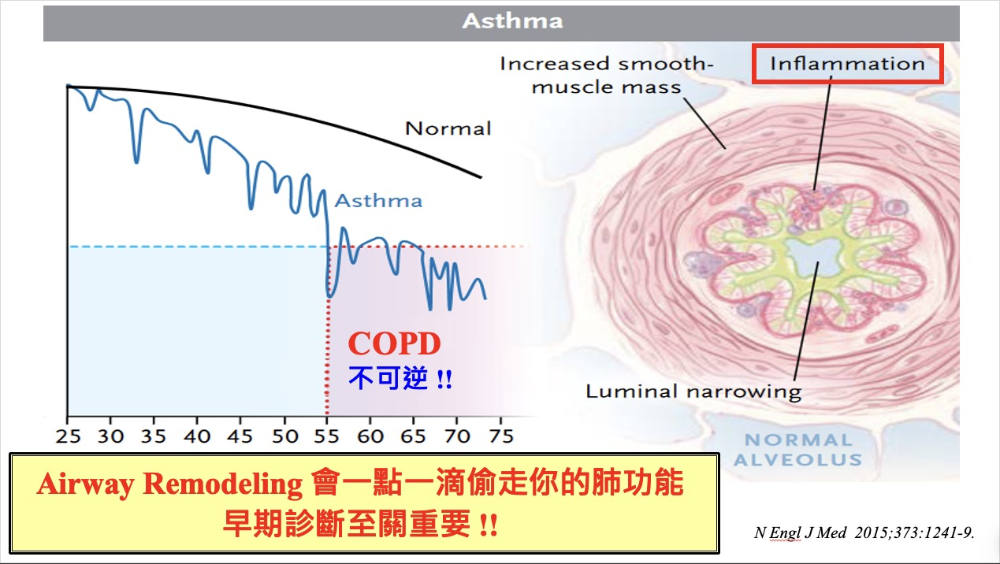
2．症狀改善後，為什麼仍要持續控制？
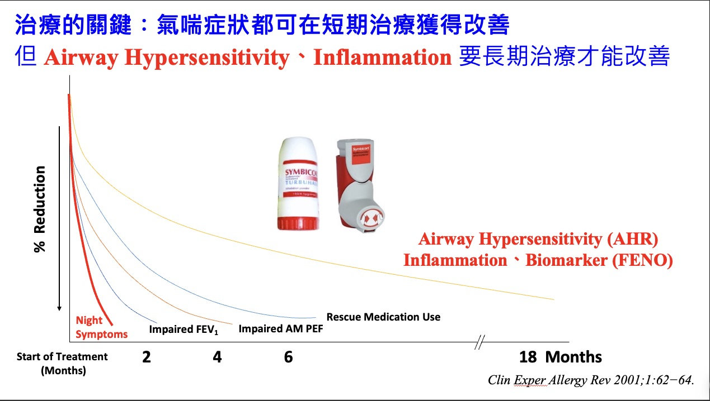
3．尖峰呼氣流速（PEF）怎麼看？
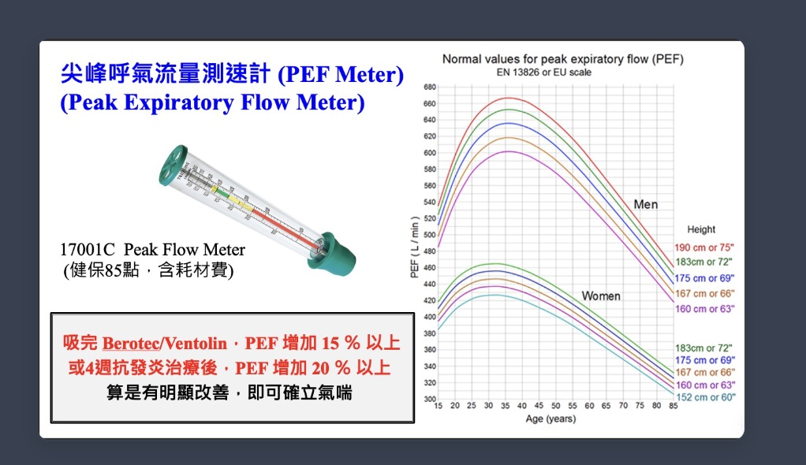
4．正規治療與保健食品有何不同？
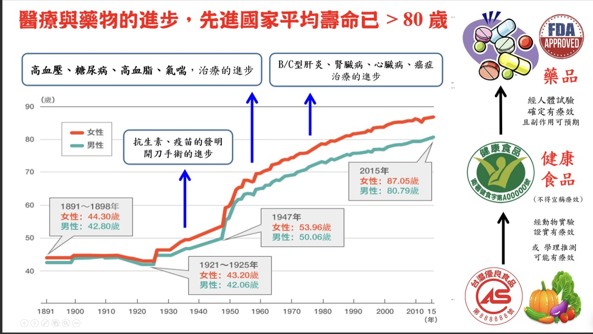
5．及早治療，和醫療團隊一起守護肺功能
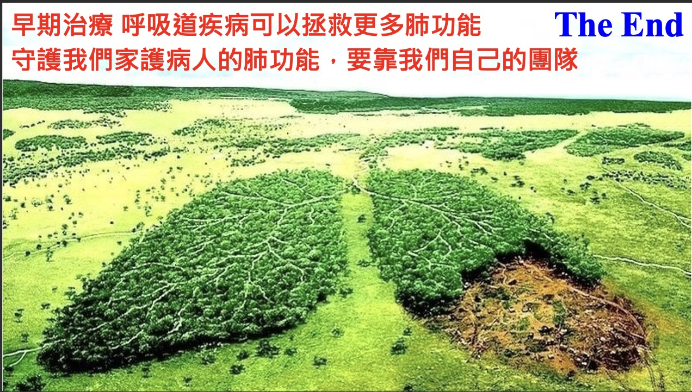
氣喘治療原則參考：GINA 2026 氣喘管理與預防策略。上述原始教材圖片目前僅供診間內部衛教，不能單獨作為診斷或用藥依據；公開上網、印製或轉載前，請先確認授權範圍。
📊 尖峰呼氣流速 (PEF) 預估值快速試算
尖峰呼氣流速代表您用盡全力吐氣時的最大氣流速度。輸入身高、年齡、體重，試算您的預估正常值：
📋 氣喘控制測試 (ACT) 國際評估問卷
請勾選過去四週的狀況。本成人版 ACT 適用於 12 歲以上，結果供回診討論，不取代醫師評估：
1. 氣喘讓您無法完成工作、課業或日常活動的頻率？
2. 您覺得呼吸困難、氣喘不過來的頻率？
3. 氣喘症狀（喘鳴、咳嗽、胸悶）讓您夜間醒來或比平常早醒的頻率？
4. 您需要使用急救吸入劑（如支氣管擴張劑）的頻率？
5. 您覺得過去四週以來，您的氣喘控制得如何？
評估結果
🚬 慢性阻塞性肺病 (COPD) 衛教與臨床評估
🚭 認識肺阻塞 (COPD)：氣道退化與發炎
慢性阻塞性肺病 (COPD) 俗稱「肺阻塞」，常與長期吸菸或長期暴露於二手菸、粉塵、空汙有關，可造成氣道慢性發炎、氣流受限與肺泡彈性喪失。雖然部分肺功能改變無法完全恢復，戒菸、正確吸藥、運動與肺復健仍可改善症狀並降低惡化風險。
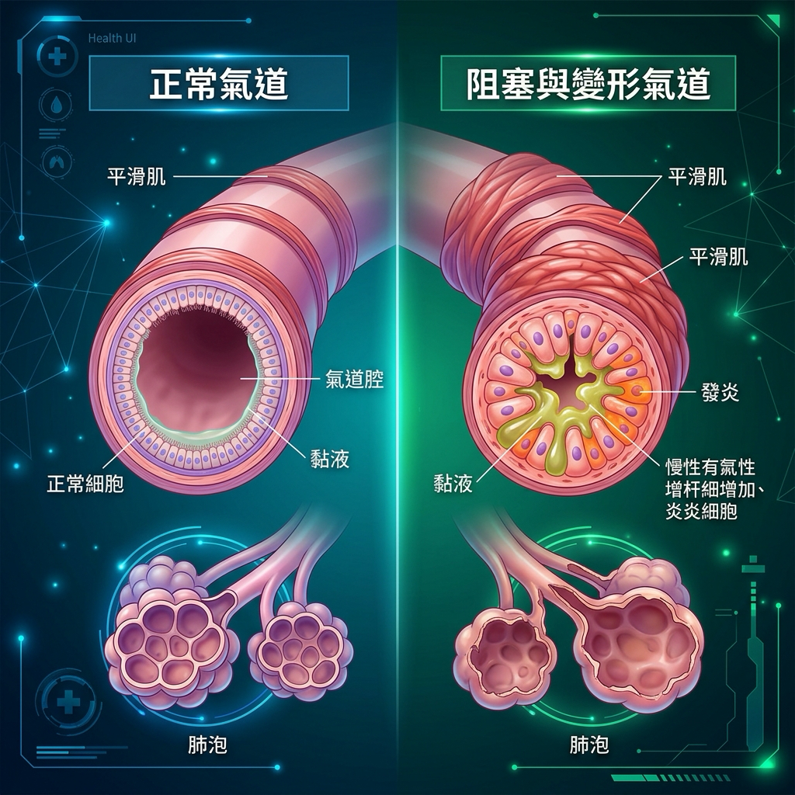
📊 正常支氣管與肺泡 (左) vs 慢性肺阻塞發炎、黏液阻塞與管腔狹窄變形 (右)
📋 mMRC 呼吸困難量表（喘氣程度自我評估）
請選擇最符合您最近日常活動喘氣狀況的描述（單選）：
評估結果
📋 CAT 肺阻塞評估測試 (COPD Assessment Test)
針對以下 8 項日常生活影響指標，點選最符合您的狀況分數（0 分為完全無影響，5 分為影響極嚴重）：
評估結果
📋 GOLD 肺阻塞 Group A、B、E 臨床分組與用藥指引
根據最新全球肺阻塞創議組織 (GOLD) 指引，臨床上依據患者的症狀喘度與惡化風險史，將患者劃分為 Group A、B、E 三組以精準用藥：
| 分組 | 臨床指標定義 | 首選初始治療用藥 | 重要治療觀念 |
|---|---|---|---|
| Group A |
低症狀、低惡化風險： • 過去一年無中度或重度惡化 • mMRC 0 - 1 級 且 CAT < 10 分 |
一種支氣管擴張劑 長效或短效藥物的選擇，由醫師依症狀改善、可及性、副作用與個人偏好決定。 |
症狀輕微，以緩解症狀並按需吸藥為主。 |
| Group B |
高症狀、低惡化風險： • 過去一年無中度或重度惡化 • mMRC ≥ 2 級 或 CAT ≥ 10 分 |
雙效長效氣管擴張劑 (Dual Bronchodilators) • LAMA + LABA 複方吸入劑 • 實證顯示雙效氣管擴張效果優於單一藥物 |
持續有喘鳴或多痰症狀，需規律吸入雙效擴張劑保養。 |
| Group E |
高惡化風險 (不論症狀多寡)： • 過去一年至少 1 次中度或重度惡化 |
LAMA + LABA 雙效長效氣管擴張劑 • 特殊考量：若血中嗜酸性白血球 (EOS) ≥ 300 cells/μL，或合併氣喘，應考慮使用三合一吸入劑 (ICS + LAMA + LABA)。 |
惡化住院風險極高，必須規律吸藥以防急性發作與呼吸衰竭。 |
🔍 智慧 COPD GOLD 分組自我檢測
系統會自動結合您在上方點選的 mMRC (目前: 未點選) 與 CAT (目前: 未點選) 分數。請補充填寫過去一年的惡化史：
🌬️ 長者防喘呼吸與排痰技巧訓練
肺阻塞患者因為肺彈性變差，氣流受阻，常常覺得氣吐不乾淨、憋在肺裡。每日練習呼吸法可顯著舒緩喘度：
🌬️ 1. 縮唇呼吸法
步驟：用鼻子深吸氣 2 秒，嘴唇縮成像吹口哨一樣，緩慢吐氣 4-6 秒（吐氣時間為吸氣的 2 倍）。
原理：防止小氣道過早塌陷，把積留的二氧化碳排乾淨！
🧘 2. 腹式呼吸法
步驟：一手放胸口，一手放肚子。吸氣時肚子鼓起，吐氣時肚子扁下去，胸口不動。
原理：訓練橫膈膜，減少呼吸時的耗氧量與喘感。
🤧 過敏性鼻炎：症狀、誘因與照護
先認識症狀，再找出日常誘因
過敏性鼻炎常出現打噴嚏、流鼻水、鼻癢與鼻塞，也可能造成眼睛癢、睡不好、白天精神不濟。照護重點是減少過敏原暴露，並依醫師指示正確使用藥物；若症狀反覆或影響生活，建議接受專業評估。
🤧 留意症狀
反覆打噴嚏、流鼻水、鼻癢、鼻塞、眼睛癢，或因鼻塞影響睡眠。
🧹 減少誘因
留意塵蟎、花粉、寵物皮屑、空氣污染、二手菸與氣候變化。
💊 配合治療
按醫囑使用鼻噴劑或口服藥物，不自行停藥、加藥或長期使用不明成藥。
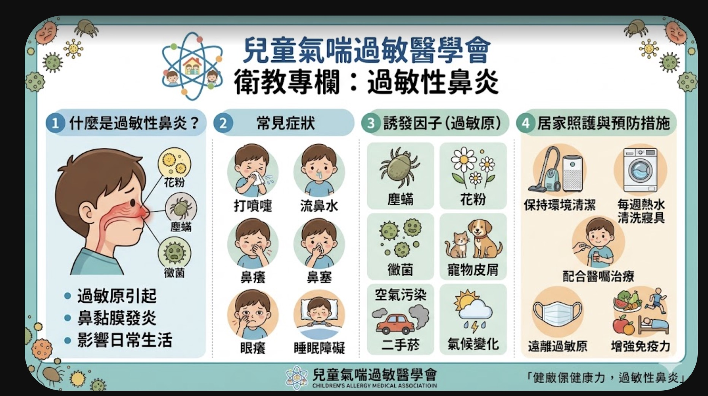
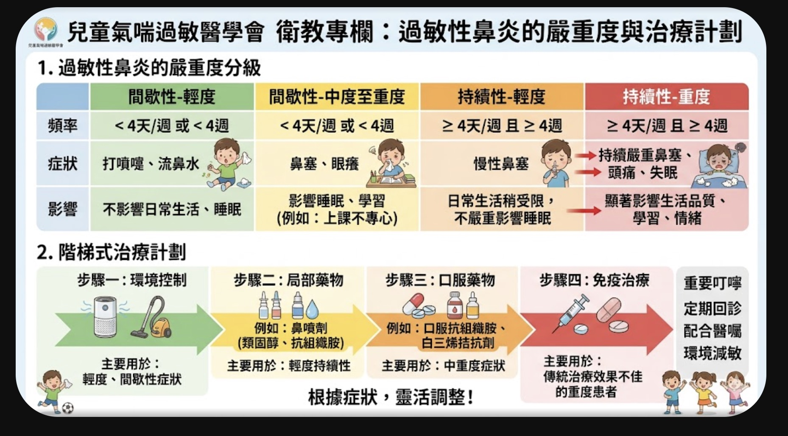
圖片來源標示：兒童氣喘過敏醫學會（依原圖）。目前僅供診間內部衛教；公開上網、印製或轉載前，請先確認圖片授權。
代謝症候群：五項中三項，就是警訊
三高加二害，先量腰圍再看數字
📏 二害
- 腰圍：男性 ≥ 90 cm、女性 ≥ 80 cm。
- 好膽固醇 HDL-C 偏低：男性 < 40、女性 < 50 mg/dL。
- 腰圍比只看體重更能提醒腹部脂肪風險。
🧪 三高
- 血壓 ≥ 130/85 mmHg。
- 空腹血糖 ≥ 100 mg/dL。
- 三酸甘油酯 ≥ 150 mg/dL。
- 服用相關藥物者也要由醫療人員判讀。
🏃 今天開始改一件事
- 含糖飲料改無糖，少加工與油炸食品。
- 每週累積至少 150 分鐘中等強度活動，依體能調整。
- 記錄腰圍、血壓與檢驗數值，設定可做到的小目標。
🎽 預防代謝症候群：「三高加二害」
代謝症候群不是一個特定的疾病，而是一群心血管危險因子的聚集指標。符合代謝症候群的人，未來罹患糖尿病、高血壓、高血脂的機率會高出數倍！
📊 5 大指標自我篩檢
🥗 長者日常飲食與運動黃金建議
預防與逆轉代謝症候群，最有效且具備臨床實證的方法就是調整生活飲食型態與規律身體活動。以下為長者貼心設計的黃金守則：
🥦 1. 飲食調整：得舒飲食原則 (DASH)
- 多吃全穀雜糧：以糙米、燕麥、地瓜或南瓜，取代白米飯與白麵條，補充維生素 B 群與膳食纖維。
- 多吃蔬菜水果：每天建議 5 份蔬菜（如深綠色葉菜）與水果，補充足夠的鉀、鎂離子協助調節血壓。
- 優質蛋白質優先：以豆腐、豆漿、魚肉及去皮雞肉等白肉，取代紅肉（豬、牛肉），減少飽和脂肪攝取。
- 改用健康好油：使用橄欖油、芥花油，並每天補充一小把（約一湯匙）無調味堅果。
- 少鹽低鈉、減糖：每日鈉攝取量應小於 2000 毫克（約 5 克食鹽），避免加工食品與含糖手搖飲料。
🚶 2. 活動建議：循序增加有氧與肌力訓練
- 規律有氧運動：從目前可負擔的時間開始，逐步朝每週累積至少 150 分鐘中等強度活動前進，例如快走、土風舞、太極拳或騎腳踏車。
- 肌力阻力訓練：每週 2 次，針對大肌肉群進行阻力訓練，例如：坐在椅子上進行起立坐下（深蹲）、彈力帶伸展。能有效維持肌肉量，預防肌少症與跌倒。
- 減少久坐時間：每坐約 30 至 60 分鐘就起身活動；步數從自己的日常基準逐步增加，不必勉強追求固定數字。
- 安全第一：運動前後要做好充足伸展與暖身，若有頭暈、胸悶、關節疼痛應立即停止。
🖼️ 診間一頁式腸胃炎衛教
診間快速版：用一張圖說明補充水分、少量多餐、建議食物與暫時避免的飲食。
約 2–3 分鐘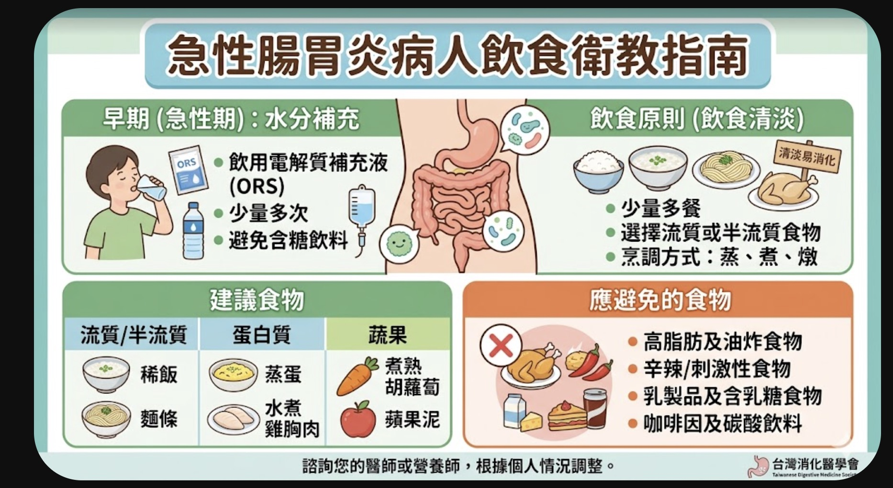
圖片來源標示：台灣消化醫學會（依原圖）。目前僅供診間內部衛教；公開上網、印製或轉載前，請先確認圖片授權。
💧 急性腸胃炎：先補水，再逐步恢復飲食
照護重點不是完全禁食，而是避免脫水
急性腸胃炎常見嘔吐、腹瀉、噁心、腹痛，也可能伴隨發燒。多數感染會逐漸改善，但嬰幼兒、年長者、孕婦、免疫力較弱者，以及有糖尿病、心臟病或腎臟病的人，更容易因體液與電解質流失而惡化。
💧 少量多次補充
優先選擇藥局販售的口服電解質液，依包裝指示沖泡；若喝了會吐，稍作休息後再從小口慢慢補充。
🥣 能吃就少量進食
從稀飯、麵條、吐司、蒸蛋等容易消化的食物開始。避免高油、高糖、辛辣、酒精與含咖啡因飲品。
📝 觀察進出水量
留意喝水量、嘔吐與腹瀉次數、尿量、精神與體溫；資訊記錄下來，可幫助醫師判斷病情。
腸胃炎居家照護 4 步驟
依世界衛生組織與疾管署原則重新整理，可直接放大閱讀。
先評估能不能喝
能喝就立即補充；若持續嘔吐、喝不下或精神變差，應儘快就醫。
首選口服電解質液
依產品指示沖泡，小口、少量、多次補充；避免高糖與碳酸飲料。
逐步恢復營養
能吃就不必持續禁食。少量多餐，選擇清淡、低油且容易消化的食物。
持續觀察與記錄
記下尿量、喝水量、嘔吐與腹瀉次數、體溫及精神狀況。
內容依據世界衛生組織及衛生福利部疾病管制署資料重新設計；不再直接使用原始圖卡，以提升手機閱讀性並降低轉載授權風險。
🚨 脫水判斷與就醫警訊
可能正在脫水
- 嘴巴乾、非常口渴，哭泣時眼淚變少。
- 尿量明顯減少、尿色很深，嬰幼兒尿布長時間沒有變濕。
- 站起來頭暈、心跳加快、四肢無力或精神變差。
- 眼窩凹陷，嬰兒前囟門凹陷，或皮膚彈性變差。
應儘快接受醫療評估
- 持續嘔吐，連少量水分都無法留下。
- 血便、黑便、吐血，或劇烈且持續的腹痛。
- 持續高燒、意識不清、嗜睡、抽搐或呼吸異常。
- 腹瀉持續未改善，或原有慢性病控制變差。
🧼 保護家人：洗手、清潔與暫停備餐
降低家中與群體傳播的五個步驟
- 肥皂加流動水洗手：如廁後、進食與備餐前，以及處理嘔吐物、排泄物或尿布後都要洗手。
- 病人先休息：嘔吐或腹瀉期間不要上班、上學或前往托育場所；症狀停止後至少 48 小時內避免替別人準備食物。
- 分開使用個人物品：不共用餐具、杯子、毛巾與食物，髒污衣物及床單應儘快單獨清洗。
- 安全處理污染處：清理嘔吐物與排泄物時戴手套、口罩，依疾管署或產品標示使用含氯漂白水消毒。
- 食物徹底煮熟：避免生食、生飲，特別是牡蠣、蛤蜊等貝類；蔬果與飲用水也要注意衛生。